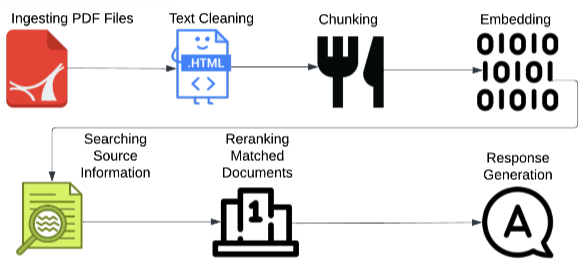
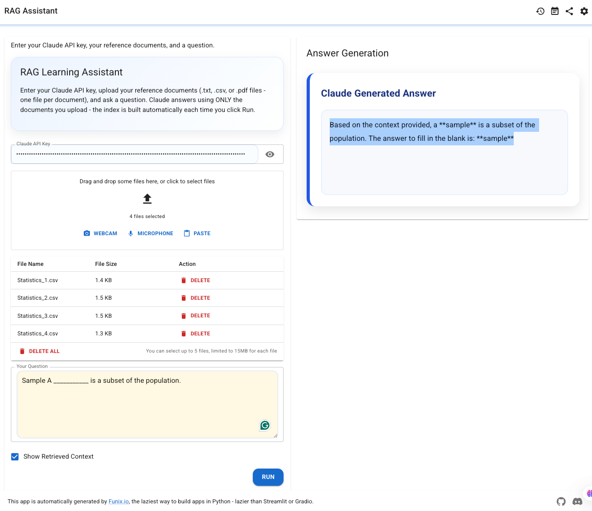

Iowa State University · Ames, Iowa, USA
Farjana Sultana Samia
Ph.D. Student in Computer Science
Research Interests
Iowa State University · Ames, Iowa, USA
Ph.D. Student in Computer Science
.txt, .csv and .pdf uploads, runs batch evaluation against sample question–answer pairs, and shows the retrieved source chunks alongside every answer.
